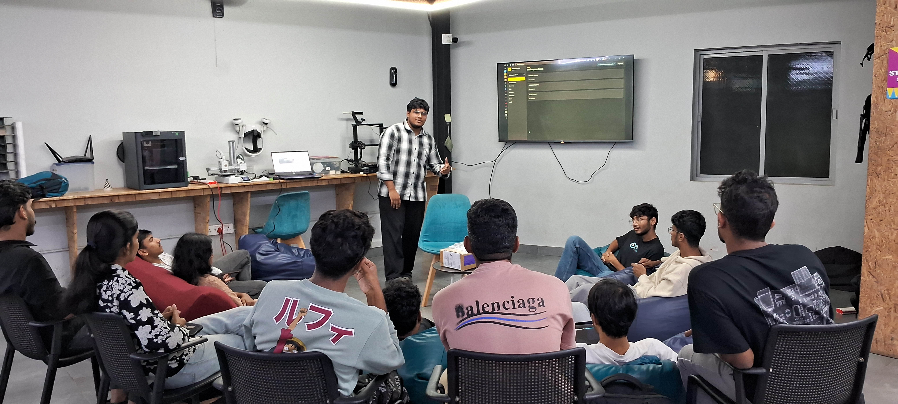

MakerThursday 0x11: Maker Space Inventory
Overview
This Maker Thursday, hosted by Shaan Shoukath, we discussed the systems, logistics, and challenges behind managing makerspace inventory. During the session, we also discussed SpaceWorks a digital inventory platform designed by Shan to simplify tracking and managing resources in a makerspace.
Topics
- Makerspace Inventory Management: Categorization, monitoring, and keeping track of hardware components and kits.
- Tool Tracking & Workflows: Methods for tool management, check-in/check-out processes, and procurement.
Project Presentation
- SpaceWorks: An open-source inventory management platform built by Shan (SpaceWorks-HQ/SpaceWorks) designed for tracking makerspace resources and tools. Shan discussed how makerspaces track their hardware and shared that the project is built as a template that can be used by any makerspace.
Photos
Session photo

Highlights
- Discussed the need for structured inventory systems in shared maker spaces.
- Demoed the FRDM-MCXN236 development board, received as part of the NXP FRDM to Innovate – On us! campaign.
Next Week
- Topic: TBD
- Host: TBD